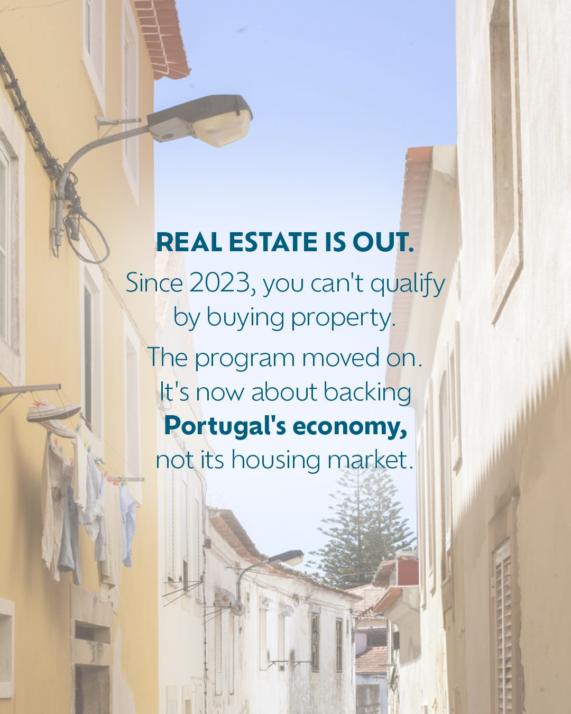
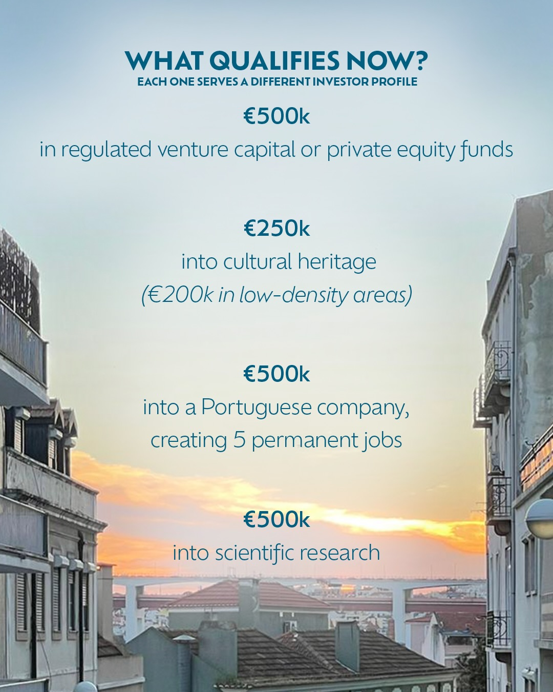
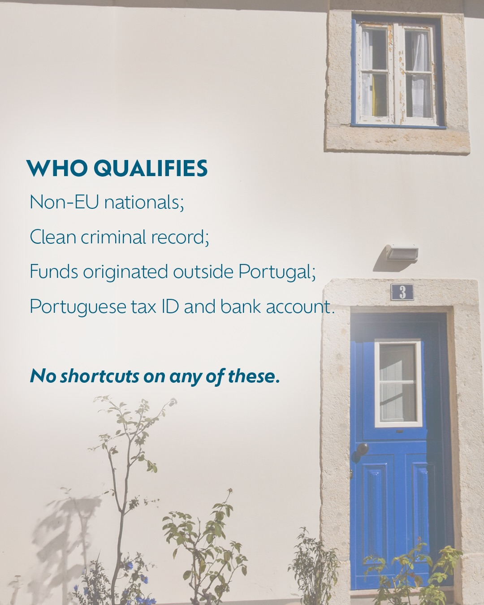
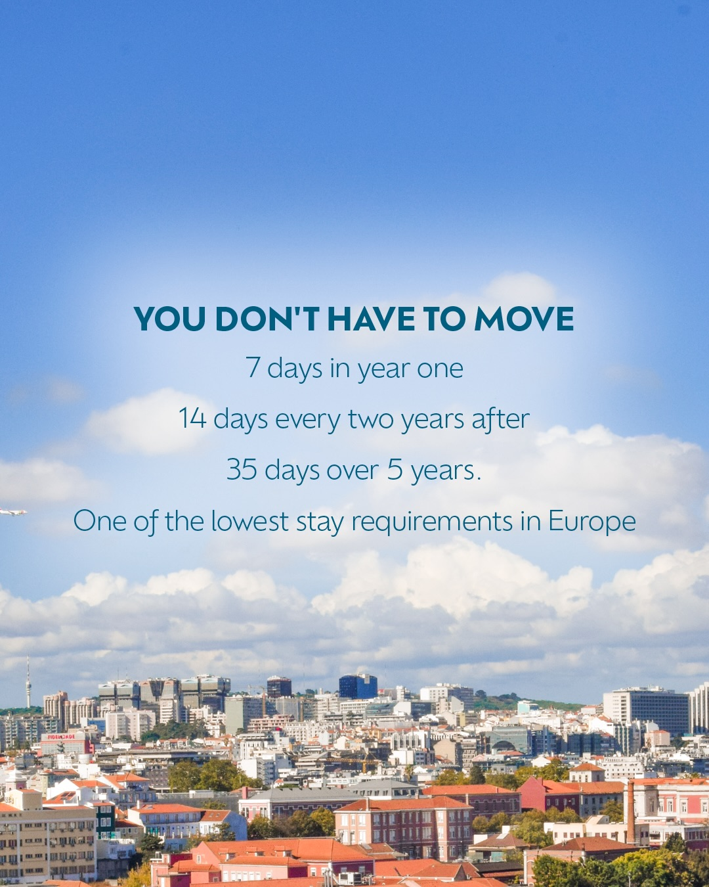
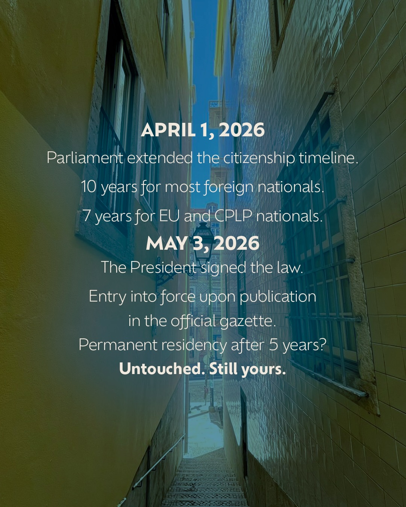

Instagram Post
PORTUGAL'S GOLDEN VISA JUST GOT A LOT MORE...
carousel (7 slides) (enriched by ClaudeClaw)
Summary
PORTUGAL'S GOLDEN VISA JUST GOT A LOT MORE INTERESTING. | PORTUGAL'S GOLDEN VISA JUST GOT A LOT MORE INTERESTING. | REAL ESTATE IS OUT | WHAT QUALIFIES NOW? EACH ONE SERVES A DIFFERENT INVESTOR ... | WHO QUALIFIES Non-EU nationals; Clean criminal record; Fu... | YOU DON'T HAVE TO MOVE 7 days in year one 14 days every t... | APRIL 1, 2026 Parliament extended the citizenship timeline
1
PORTUGAL'S GOLDEN VISA JUST GOT A LOT MORE INTERESTING.
A dark blue-toned image features a window with white frames, closed curtains, and an ornate metal balcony railing, set against a textured wall.
2
PORTUGAL'S GOLDEN VISA JUST GOT A LOT MORE INTERESTING.
A dark blue-toned image features a window with white frames, closed curtains, and an ornate metal balcony railing, set against a textured wall.
3
REAL ESTATE IS OUT. Since 2023, you can't qualify by buying property. The program moved on. It's now about backing Portugal's economy, not its housing market.
A narrow street in a European town is lined with light-colored buildings, with laundry hanging from a clothesline on the left and a streetlamp extending from a building.
4
WHAT QUALIFIES NOW? EACH ONE SERVES A DIFFERENT INVESTOR PROFILE €500k in regulated venture capital or private equity funds €250k into cultural heritage (€200k in low-density areas) €500k into a Portuguese company, creating 5 permanent jobs €500k into scientific research
The image displays text overlaid on a photograph of a city street with buildings on either side, looking towards a sunset sky over a distant bridge.
5
WHO QUALIFIES Non-EU nationals; Clean criminal record; Funds originated outside Portugal; Portuguese tax ID and bank account. No shortcuts on any of these. 3
A white building facade features a bright blue door with a small window, a window with white frames above it, and several green plants growing along the bottom of the wall.
6
YOU DON'T HAVE TO MOVE 7 days in year one 14 days every two years after 35 days over 5 years. One of the lowest stay requirements in Europe
An aerial view of a city with numerous buildings and red-tiled roofs under a blue sky with scattered white clouds, with text overlaid on the sky.
7
APRIL 1, 2026 Parliament extended the citizenship timeline. 10 years for most foreign nationals. 7 years for EU and CPLP nationals. MAY 3, 2026 The President signed the law. Entry into force upon publication in the official gazette. Permanent residency after 5 years? Untouched. Still yours.
A narrow, steep alleyway with stairs leading down is visible between two tall buildings with windows and tiled walls, under a bright blue sky.
All slides




